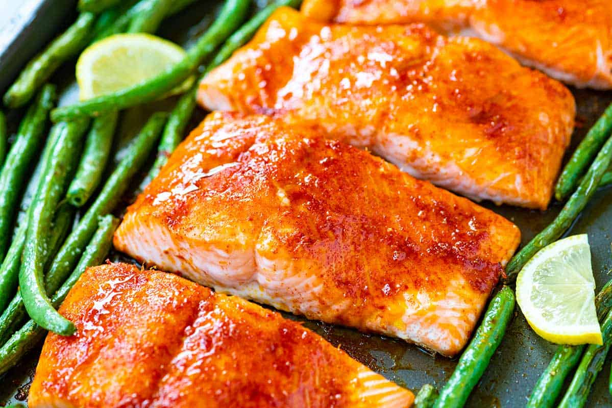

Brown Sugar Salmon

Description
Brown Sugar Glazed Salmon is a simple and delicious way to kick your salmon up a notch!
I love the contrast of the light and flakey salmon with a sweet brown sugar glaze.
It's easy enough to put together for a weeknight dinner and the kids love it too!
If you are a fan of salmon, make sure to try my spinach stuffed salmon and Honey Garlic Salmon recipes!
Ingredients
- ¼ cup (50 g) brown sugar, packed
- 2 tablespoons dijon mustard
- 4 (6 ounces) boneless salmon fillets
- salt and ground black pepper to taste
Steps
- Preheat the to 425°F and set the oven rack at to the highest setting.
- Prepare the rack of a broiler pan with cooking spray.
- Arrange the salmon on top of the prepared broiler pan and season with salt and pepper.
- In a small bowl, whisk together the brown sugar and Dijon mustard; spoon mixture evenly onto top of the fillets.
- Cook for 10 minutes in the preheated oven, switch your oven to the broil setting, and broil for an additional 5-10 minutes, or until the glaze is caramelized and golden.